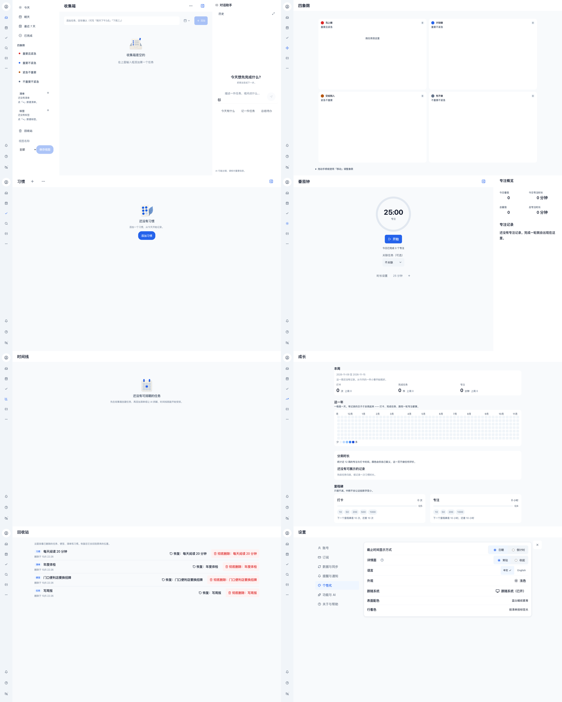
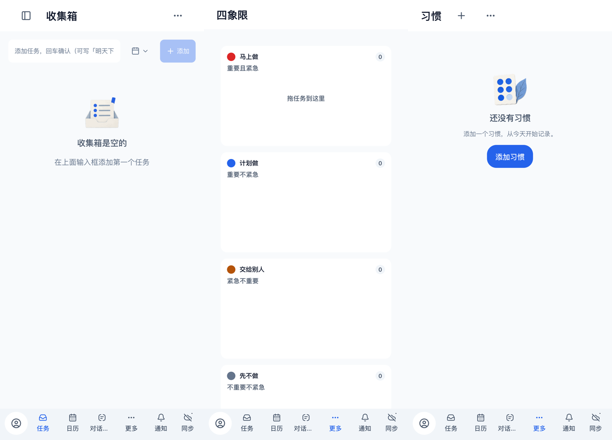
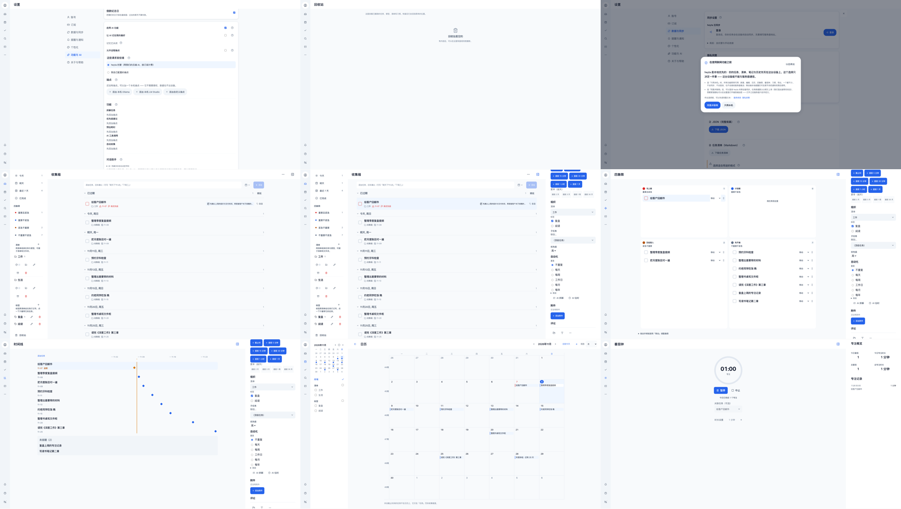
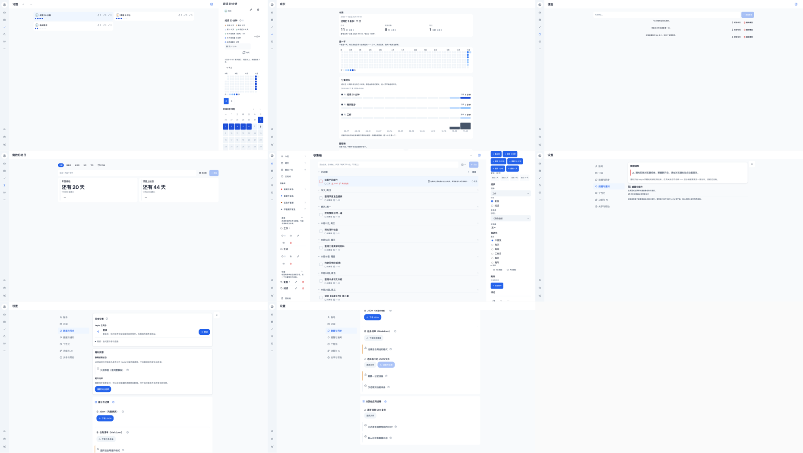
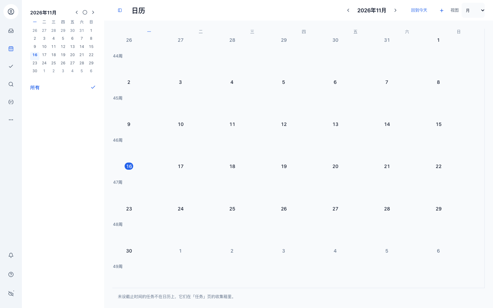
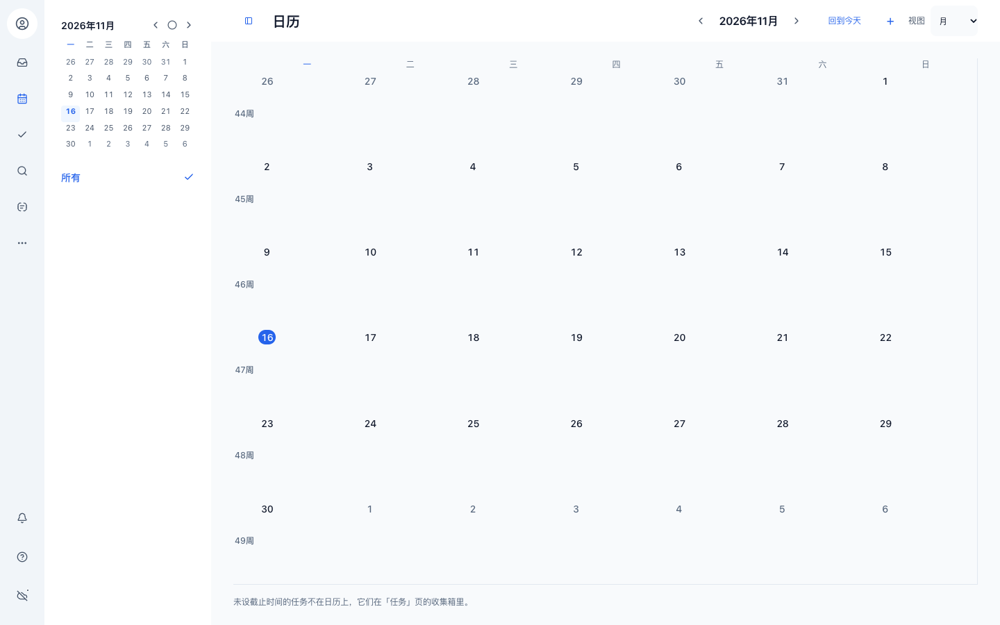

| 项 | 内容 |
|---|---|
| 审计对象 | heyta 客户端（Web 桌面 / Web 窄屏 / 原生移动端外壳） |
| 审计方法 | Apple《Designing Fluid Interfaces》《Principles of Great Design》《Details of UI Typography》+ 本仓设计系统规则，逐条对照 |
| 证据来源 | 见 §1「审计口径与证据」 |
| 审计日期 | 2026-11-16 |
| 结论一句话 | 工程与设计系统的完成度处于同类产品上游；与”Apple 级”的真实差距不在”有没有规则”，而集中在三处：① Web 端手势动效是”曲线模拟”而非”可打断的弹簧”；② 浅灰/小字/空网格多处贴着可读性临界；③ 信息架构与入口的收口不足（两层导航、窄屏标签截断、设置说明文字）。 |
做得好的（应当保留、不要为了”更 Apple”而拆掉）：
--ht-*，有
check-hardcoded 兜底。这正是 Apple “craft = 每个取值可辩护”
的工程化形态。typography.ts）：把「字号+字重+行高+字距」捆成
row-title / caption / numeric-display 这类语义名，直接照搬
Apple semantic typography
的做法，且字距随字号变（大标题 −0.022em、小字
+0.006em）——这一条很多团队做不到。:focus-visible、forced-colors、prefers-reduced-motion、prefers-reduced-transparency
四处都有实装（不是文档里的口号）；触控目标 44px、任务行 60px、数字
tabular-nums。press-origin.ts 在
pointerdown 就写径向高光原点，且不触发 React
重渲染；.ht-btn:active 100ms 起效。material.css 用
backdrop-filter: blur(20px) saturate(180%)
做悬浮层，且定了”亮面不许叠亮面”的硬规则——与 Apple §12 一致。tokens.spec.ts）。必须处理的（本次审计的核心结论）：
--ht-ease-spring: cubic-bezier(0.34,1.56,0.64,1)
只是一个”看起来会回弹”的缓动曲线，它不能被中途抓住、不能继承手指速度、反转时会撞”砖墙”（Apple
§3/§4/§5）。原生端用 Animated.spring 是达标的，Web
端不是。--ht-color-foreground-subtle（slate-500）在白底
4.76:1 达标，但在 surface-sunken（slate-100）上只有
4.34:1（低于 AA 4.5），而它被大量 11–12px
小字使用；成长页”这一年”热力图的空格≈1.07:1，作为”格”几乎不可见。apps/mobile/TabBar.tsx（5
项：任务/日历/专注/分类/我的）对不上；11-08 与 11-14
的设置界面形态也不同。“当前界面到底是哪一版”必须先由一次同构建的新拍摄钉死，否则任何”验收”都落不到当前产物上。注：第 4 条不是”挑刺”，是审计能否成立的前提。下面所有涉及具体版面像素的结论，都标注了它取自哪份快照、以及是否为”需复核（待确认）“。
| 证据 | 时间 | 规格 | 数据态 | 说明 |
|---|---|---|---|---|
A. screenshots/web-desktop/W01–W08 |
2026-11-14 | 1440×900 | 空数据 | 最新；代 C 外壳（rail + sidebar） |
B. screenshots/web-mobile/MW01–MW03 |
2026-11-14 | 1170×2532 | 空数据 | 最新；Web 窄屏（底部栏 6 项） |
C.
docs/operations/software-copyright/evidence/screenshots（17
张） |
2026-11-08 | 1920×1080 | 有数据 | 唯一能看到任务行/日历/热力图/分类时长的实拍 |
| D. 设计系统源码 | 当前 | — | — | packages/design-system/src/tokens.css（1024
行）、typography.ts |
| E. 动效/无障碍源码 | 当前 | — | — | material.css、controls.css、press-origin.ts、RailNavigation.tsx、apps/mobile/src/nav/TabBar.tsx |
已知口径冲突（必须先解决，否则审计结论只能是”对某一份快照成立”）：
TabBar.tsx
代码）是 5 项。→ 二者不是同一个产物，或截图基线已过期。建议的第一步（P0）：用「构建产物 +
vite preview+ Playwright」按当前代码重拍一遍（pnpm screenshot:capture），并造一条任务/一个习惯/一轮专注让列表、热力图、象限出现真实数据。没有这一步，“当前界面”无法定义。




评级口径：优（可作为范例）/ 良（达标，有小缺口）/ 中（可用，但有明确落差）/ 待改（有阻碍性问题）。每条附一句判据。
| 原则 | 评级 | 一句话判据 |
|---|---|---|
| 1. Purpose 目的性 | 良 | 功能域清晰（任务/象限/习惯/专注/成长/倒数日）；但入口偏多，窄屏 6 项即”什么都想要”的表现。 |
| 2. Agency 自主性 | 良 | 回收站可恢复、危险操作有确认、批量动作有回执；缺失的”宽容度”主要在拖拽重排无撤销提示（可接受，但可加轻量 Undo）。 |
| 3. Responsibility 责任 | 良 | 隐私/加密选项、导入导出、AI 说明齐；AI 建议的”可核对/可推翻”呈现方式未在证据中体现，待确认。 |
| 4. Familiarity 熟悉 | 良 | 列表/日历/四象限的心智模型标准；图标统一 Lucide（已核实没有 emoji 当图标）。减分：两层导航的”去哪儿”不直观。 |
| 5. Flexibility 灵活 | 良 | 断点、暗色、跟随系统、四套主题（蓝白/暖纸/雾青）齐；窄屏底部栏项数越过 HIG 上限。 |
| 6. Simplicity 简洁 | 中 | 视觉极简、留白好；但”看着空、其实不简单”：11/12/13/14px 四档邻近字号、两层导航、设置长说明。 |
| 7. Craft 工艺 | 良 | token/对比度/动效档/材质都很讲究；减分项：Web 动效非弹簧、浅网格不可见、空态位图与线性图标不同源、证据与代码不一致。 |
| 8. Delight 愉悦 | 良 | 克制、有按压高光与勾选弹簧；缺”流体手势”与多模态（haptic/声音）的关键瞬间。 |
综合：上游成熟水准。 距”Apple 级”的差距是局部且可修的，不需要推倒重来。
这是本次审计的”体检表”。✅ 达标 / 🟡 部分 / ❌ 缺口。附证据。
| # | Apple 机制 | 状态 | 证据 / 判据 |
|---|---|---|---|
| 1 | 响应：按下即反馈，杀延迟 | ✅ | :active 100ms + pointerdown
径向高光（press-origin.ts），符合”响应在按下”。 |
| 2 | 直接操控：1:1 跟手、尊重抓取偏移 | 🟡 | 有拖拽（dnd-kit / 四象限 / 手动排序），但是否
setPointerCapture + 1:1
无原生拖影，需实测确认；useDragDayNav
刻意不用 capture（有理由，但与”1:1 跟手”的取舍需复核）。 |
| 3 | 可打断性（最重要） | ❌ | Web 浮层/抽屉用固定时长 CSS transition（material.css
200ms），飞行中不可被抓住反向；ease-spring
是曲线不是弹簧。 |
| 4 | 用弹簧不靠固定动画 | 🟡 | RN 端 Animated.spring +
motion.spring-damping/response ✅；Web 端是 cubic-bezier
❌。两端能力不对等。 |
| 5 | 速度交接（拖→动画无缝） | ❌ | Web 无 velocity handoff 实现；dnd-kit 默认 drop 不传松手速度。 |
| 6 | 动量投影（甩到该去的地方） | ❌ | 无 project(v) 落点计算；松手直接吸附当前最近位。 |
| 7 | 空间一致性（来去同路、锚定源点） | 🟡 | 弹层锚定触发点（AnchoredMenu 有）；但入场/退场曲线是否镜像、是否”从哪来回哪去”需逐面复核。 |
| 8 | 手势方向暗示 | 🟡 | 抽屉/面板有位移入场，方向基本成立；缺”中间帧指向结果”的明确设计。 |
| 9 | 橡皮筋边界 | ❌ | 未发现 rubberband()
类实现；拖到边界是硬停还是阻尼待实测。 |
| 10 | 手势细节（tap/drag 阈值/并行识别） | 🟡 | 有拖拽阈值思路；tap 在 down 高亮已做。并行识别/取消策略未集中体现。 |
| 11 | 帧级平滑（transform/opacity、will-change） | ✅ | 规则明确”只动 transform/opacity”，有测试区间约束。 |
| 12 | 材质与深度（半透明层级） | ✅ | backdrop-filter 悬浮层 + “亮面不叠亮面”硬规则 +
暗色用深蓝提升。 |
| 13 | 多模态（视/听/触同帧） | ❌ | 无 haptic / 声音反馈（Web 可 Vibration API，RN 可 Haptics）。 |
| 14 | 降低动效/无障碍 | 🟡 | prefers-reduced-motion 是”全部压成
1ms”（≈取消），而非”温和 cross-fade”；reduced-transparency/contrast
已做。 |
| 15 | 排版（光学字号/字距/行高/动态字号） | 🟡 | 字距随字号 ✅、语义样式 ✅、tabular-nums
✅；11/12/13/14 四档邻近层级偏密；用 Plus Jakarta +
PingFang 回退，中英混排对齐待评估。 |
| 16 | 设计八原则 | 良 | 见 §2。 |
每条：现象 → 证据 → Apple 依据 → 影响 → 修复建议（含落点）。工作量 S/M/L。
P0-1 Web 端手势动效不是弹簧，不可打断 - 现象：Web
的”弹簧”是
--ht-ease-spring: cubic-bezier(0.34,1.56,0.64,1)；浮层入场
material.css 为 200ms ease-enter。RN 端才是
Animated.spring。 -
证据：tokens.css:389、material.css
.ht-material { animation: ht-material-in 200ms ... }；packages/ui/src/task-list/TaskRow.tsx（RN
用 Animated.spring）。 - 依据：Apple
§3「每条动画都必须可被中途抓住、反向」；§4「用弹簧不用固定时长」；§5「速度交接」。
- 影响：拖拽排序、四象限拖放、抽屉/sheet 在 Web
上反转会撞墙、飞行中不可抓住——这是与
iOS 手感差距最大的一处。 -
修复：对可手势打断的元素（排序项、拖放落位、抽屉、sheet）改用真弹簧（Motion
的
animate(el,{y:target},{type:'spring',bounce:0,duration:0.4})
或自研
spring），从当前呈现值起步并传入松手速度；bounce
仅在有甩动时给 0.2。工作量 M。
P0-2 证据与代码不一致，“当前界面”未被钉死 -
现象：11-14 窄屏底部栏 6 项含「对话…」；TabBar.tsx 是 5
项。设置界面 11-08 与 11-14 形态不同。 -
依据：无（这是交付纪律问题，不是 Apple 原则）。 -
影响：任何”验收/回归”都可能对着过期图说话。 - 修复：按 §1
建议，用当前代码重拍 + 造样本数据，建立”审计基线快照”。工作量
S。
P0-3 可读性临界：foreground-subtle 在凹陷面
4.34:1；11–12px 小字大量使用 -
现象：--ht-color-foreground-subtle = slate-500 #64748b。本次现算：白底
4.76:1 ✅、surface-sunken(slate-100) 4.34:1
❌（<AA 4.5）。它被 settings__item-sub、大量
caption 使用。 - 证据：§6 对比度现算表；controls.css
注释亦自认”subtle 在 sunken 上 4.34、够不到 4.5”。 - 依据：Apple
§14/§16-Responsibility；WCAG AA 正文 4.5。 -
影响：低亮度屏/浅色主题下辅助信息读不清；这是规则已知但仍在用的欠账。
- 修复：小字（≤12px）一律用 foreground-muted(600,
6.92–7.24:1)，或把 subtle 提亮到在 sunken 上 ≥4.5（约需 #5B6B80
区间，改后要重跑 tokens.spec.ts 的全量对比度断言）。工作量
S。
P1-0（用户实测，最高优先） 页边距没在外壳层收口：日历下方内容卡在 iPad / iPhone 上全宽、像”根本没留边距”
✅ 状态：已从根上修掉（不是补丁）。 分两步： 1. 并行会话先做了三处点修（
16300338/3daf4239/1cb847f5，13:01–13:23）； 2. 本次把它收进设计系统的 token 层（分支feat/screen-gutter-and-contrast，提交ed931eb5）： 留白三档 16/24/32 由SCREEN_GUTTER_STEPS唯一声明，Web 走var(--ht-screen-gutter)、 原生走根 Provider 注入（withResolvedScreenGutter），外壳不许再写? 0、内容卡不许再自补 16dp， 并由新门禁check:screen-gutter与tests/screen-gutter.spec.ts双向钉住。 下面保留问题描述作为背景与判据；末尾附本次验证。 ⚠️ 这三笔提交发生在本次审计期间，且与并行会话同步落在同一工作树上（详见 §9「并行写入提示」）。 - 现象：日历屏下方那张「这一天没有到期的任务」卡（以及脚注）在平板上贴到屏幕两边，观感就是没有页边距；iPhone 同样。 - 证据（代码级，能精确到当天）： -apps/mobile/src/screens/CalendarScreen.tsx用chrome="board"，其 2026-11-16 注释原文：「board档把Screen的左右 padding 归零（内容铺满），于是日历下面那张「这一天没有到期的任务」卡连页边距都没有，贴在屏幕两边——真机上就是”根本没留边距”的观感（iPhone 同样）」；当天用paddingHorizontal: space.4给整块板补了 16dp。 -packages/ui/src/calendar/CalendarBoard.tsx2026-11-15 又单独给脚注补了space.4。 -packages/ui/src/layout/content-measure.ts：ScreenChrome='board'时contentMeasureMaxFor返回undefined（铺满、无最大宽），page档才会收窄到CONTENT_MEASURE_MAX=680居中。 - 依据：Apple §16-Craft（间距不是随手值）+ §7 空间一致性；本仓docs/agents/screen-chrome.md的三档本意是”只有真正的全幅视觉（网格）才铺满，内容卡必须有页边距”。 - 根因（这是一类结构问题，不是”这一处漏了”）：页边距由”外壳档”一刀切决定——board档把整屏 padding 归零，于是除网格外的内容卡/脚注都掉到 0，只能靠各自补 16dp 打补丁（11-15 补脚注、11-16 补整块板）。而 16dp 在 iPad（820–1366dp）上≈没有留白，因为board档同时没有最大宽。→ 补丁越打越多，却治不了”平板上看着全宽”。 - 修复（正确层次，别再加第三处 16dp）： 1. 外壳级响应式 gutter：给board档也提供一条随宽度变化的页边距（16 / 20 / 24）或”夹住内容卡到CONTENT_MEASURE_MAX居中”； 2. 只让网格出血：把”铺满”能力下沉到CalendarBoard的网格元素本身，而不是给整屏Screen清零 padding —— 这样脚注、空日卡自然继承外壳页边距，不需要各自补； 3. 验收宽度：390（iPhone）/ 834（iPad 竖）/ 1194（iPad 横）三档，看”卡片左右确有可见留白、网格仍可满幅”。 - 工作量 M（改外壳档的取值模型 + 把出血下沉到网格 + 三档回归）。这条建议排在最前面做，因为它影响”一眼看到的最外层观感”。
根治后的口径（2026-11-16 15:00，分支
feat/screen-gutter-and-contrast）
| 宽度 | 留白 | 谁 |
|---|---|---|
| < 768 | 16 | 手机（iOS 标准边距） |
| ≥ 768 | 24 | 平板竖（iPad 834）/ 小窗 |
| ≥ 1024 | 32 | 平板横（iPad 1194）/ 桌面 |
同一条”页面留白”从三个答案收敛为一处声明：SCREEN_GUTTER_STEPS
+ 三条 media query。 判据：pnpm check:screen-gutter（4
条，每条实测红过一次）+ tests/screen-gutter.spec.ts（CSS↔︎TS
逐值对账）。 另：三级文字 foreground-subtle 提到新档
slate-550，使它在每一块合法地面（含
surface-sunken） 都过 AA —— 这与页边距是同一类问题（“记住换
token”从来不是规范）。
本次验证（Web 端，当前构建实拍 2026-11-16 13:40） -
方式：vite build → vite preview →
用现有截图流水线（scripts/screenshots/capture.mjs）在
1440×900 与 1170×2532(390 CSS) 两个视口拍日历。 -
结果：网格与脚注一致落在内容留白之内，桌面 24px、窄屏
16px；脚注不再贴边/溢出。见下图。 - ⚠️ 原生（iPad/iPhone 桌面
App）实拍未完成：本环境无 iOS 模拟器/真机，无法跑
apps/mobile 的视觉回归；代码层已过 tsc（@heyta/ui、@heyta/mobile 均 0
error）、check:design / check:spacing-scale /
check:calendar / check:tap-targets
全绿、vitest run calendar 82
项通过。原生复拍命令：pnpm --filter @heyta/mobile ios 后在
390/834/1194 三档实拍核对。


P1-1 成长页”这一年”热力图空格几乎不可见 ✅
已修（279cf997） - 现象：空格约 #f1f5f9
压在白底上 ≈
1.10:1，作为”一天的格子”这个信息载体等于消失；只有有记录的格子亮蓝。
- 证据：ev_growth2.png（11-08
有数据）；tokens.css 的 color.heat-0。 -
依据：Apple §16-Craft（轨道应可辨，数据比轨道亮）；§1 反馈的连续性。 -
修复：color.heat-0 →
slate-200（1.23:1）。slate-300 会与
heat-1（blue-200，1.42）明度撞车、把梯度压平，故不取。 判据是
GRAPHIC_PAIRS 新增的一条
color.heat-0 on color.surface ≥ 1.2（与既有的”分隔线
≥1.2”同档）。
P1-2 信息架构：两层导航语义重叠 - 现象：桌面 = 图标
rail（收集箱/日历/已完成/搜索/助手/更多）+ 文本
sidebar（今天/明天/最近7天/已完成/四象限/清单/标签/回收站/视图）。“已完成”在两处出现；“今天/明天”只在一处而”收集箱”只在另一处，用户要靠猜”哪个域归哪一层”。
-
证据：crop_rail.png、desktop-empty-20261114.png、App.tsx
侧栏段落。 - 依据：Apple §16-Simplicity（清晰：层级让最重要的最先看到）+
§16-Familiarity（预测性）+ 六条放置规则（入口分层）。 -
修复：明确职责二分并在视觉上强区分——rail =
功能域（任务/日历/专注/成长/我的…），sidebar =
当前域内的范围/筛选；或收敛为单层”范围导航 +
overflow”。至少消除”已完成”重复入口。工作量 M。
P1-3 窄屏底部栏 6 项 + 标签截断「对话…」 -
现象：Web 窄屏底栏：任务/日历/对话…/更多/通知/同步，共 6 项，「对话…」被
ellipsis 截断。 - 依据：Apple HIG 标签栏 3–5
项、标签完整可读；§16-Familiarity（标签是路径，不该猜）。
- 修复：压到 ≤5 项；次要项（通知/同步）收进「更多」或顶栏；“对话”若是”AI
助手”改名到能完整显示的长度。工作量 S。 - 注：原生
apps/mobile/TabBar.tsx 已是 5 项 ✅——差距只在 Web
窄屏这一支。
P1-4 设置信息密度与”说明文字” - 现象：11-08
取证中设置页有大量成段说明（AI 托管、导入格式等）；11-14
弹层已收敛为无说明的紧凑列表。两者冲突。 -
依据：本仓自身规则「设置界面禁止写说明文字」+ Apple
§16-Simplicity（高级项下沉一级）+ §5 设置页信息架构。 - 修复：确认 11-14
紧凑形态为当前基准；如需保留解释，移到行内 ?
tooltip（本仓已有 ? 纪律与门禁）。工作量
S（若已收敛则仅需复核）。
--ht-font-size-2xs/xs/sm/md =
11/12/14/13px。apple 用更少的档位 + 字重区分。建议合并 13 与
14（分组标题走 14/600），11 与 12 之间只保留一档。→ 需要连同
typography.ts 的 caption/tab-label
一起看。工作量 S。--ht-icon-*
对齐）。navigator.vibrate）与克制音效。Apple §13
三规则（因果/同帧/克制）。checkboxSpring），Web 侧勾选应同样用弹簧而非纯
CSS。| 屏幕 | 观感 | 主要问题 |
|---|---|---|
| 收集箱/任务列表 | 干净、行高 60px、元信息层级清楚（文件夹·日期） | 空态；有数据态需复核；分组头 chevron 位置可再对齐标题基线 |
| 四象限 | 四宫格 + 彩色点 + 计数，模型标准 | 空格大、CTA”拖任务到这里”可更明确；拖拽落位手感（P0-1） |
| 习惯 | 空态清晰 + 主按钮 | 列表态需复核 |
| 日历 | 月网格清晰、任务条按象限着色 | 平板/手机 board
档全宽无页边距（P1-0）；空日卡/脚注靠 16dp 补丁 |
| 番茄钟/专注 | 大计时器居中、tabular-nums |
计时结束的多模态反馈缺 |
| 时间线 | 散点+连线，信息设计有想法 | 一眼读不懂坐标含义（缺轴标签/图例），需补 wayfinding |
| 成长 | KPI 层级好、分类条合理 | 热力图空格不可见（P1-1）；“分类时长”左侧色块标”无”易误解 |
| 回收站 | 行内 恢复/彻底删除，危险色分离 | 危险动作的二次确认已合理；可加批量 |
| 设置 | 11-14 弹层紧凑、右对齐值 | 11-08 长说明（P1-4）；分段控件里用”圆点单选”是混合形态，建议纯分段 |
| 窄屏（Web） | 底栏图标+文字 | 6 项 +「对话…」截断（P1-3） |
| 前景 / 底色 | 对比度 | 判定 |
|---|---|---|
| foreground(slate-900) on background(slate-50) | 17.06:1 | ✅ AAA |
| foreground-muted(slate-600) on white | 7.58:1 | ✅ AAA |
| foreground-muted on background(slate-50) | 7.24:1 | ✅ AAA |
| foreground-subtle(slate-500) on white | 4.76:1 | ✅ AA（勉强） |
| foreground-subtle on background(slate-50) | 4.55:1 | ✅ AA（勉强） |
| foreground-subtle on surface-sunken(slate-100) | 4.34:1 | ❌ < AA |
| primary(blue-600) on white | 5.17:1 | ✅ AA |
| slate-400 on white（占位符若用它，待确认实际取值） | 2.56:1 | ❌ 明显不足 |
| slate-400 on slate-50 | 2.45:1 | ❌ 明显不足 |
结论：muted（600）是安全档；subtle（500）只能坐在白/浅底，不能坐 sunkette；400 不能用于任何需要读的文字。
| # | 项 | 提交 | 判据 |
|---|---|---|---|
| 1 | 输入区收成「一个外框 + 上下两层」，主操作改圆形图标键 | 4b43d5ed |
1440 / 390 实拍：外框完整包住两层，圆形键不溢出 |
| 2 | 原生端屏幕底改白 + 卡片补细线（前两轮只修了 Web） | aafa6635 |
iPad 真机实拍，与 Web 1440 同构 |
| 3 | 空态自带行动入口；空态时收掉 FAB | a05ae24b |
真机：空态按钮在位、无重复 FAB |
| 4 | 热力图 0 档 1.10 → 1.23 | 279cf997 |
GRAPHIC_PAIRS 断言 + 635 tests |
| 5 | 回收站动作列不压缩、可见文字与读屏名分档 | 7868c1ac |
1440 实拍：标题完整、动作贴右缘 |
| 6 | 「我的」账号卡补 action.disclose 箭头 |
7868c1ac |
该图标此前零消费者（icons.tsx 自登记欠账） |
| 7 | 习惯空态收进共享 EmptyState；成长按钮进 action
槽位 |
d0a14289 |
check:empty-state |
两处刻意不做： - 倒数日空态不加 action —— 它的
composer 在 view === 'active'
时常驻在空态上方，下一步本来就在眼前。 - 「我的」未登录卡不缺 CTA ——
它整块可点（Pressable +
accessibilityRole="button"），缺的只是”可点”的视觉暗示，已补箭头。
| # | 项 | 提交 | 判据 |
|---|---|---|---|
| 1 | 首启页四张深色抽象壁纸换成四则三格漫画（任务 / 日历 / 专注 / 统计） | 806d6f45 |
iPhone XR 真机：三格完整、底部留白放得下标题与两个出口 |
| 2 | 首启页固定亮色 + 每页一行说明 | 806d6f45 |
深色模式下不再把米白纸底压成灰黑 |
| 3 | 底部渐隐提前加重，标题不再压在第三格人背上 | f8763436 |
真机两版对比 |
| 4 | 三处登录入口统一到「纸感 + 一圈细线」 | eeb02d49 |
landing /signin 实拍、web 面板、mobile
Card outlined |
| 5 | 隐私同意从「首启的墙」改成「网络守卫」 | c49d1084 + ADR-0086 |
真机：冷启动直接是漫画；1355 + 35 tests |
| 6 | 被拦下的请求等用户决定、同意后原样重试 | 0eaeba4d |
六种情形各一条单测；auth-consent-registration 6
passed |
| 7 | web 登录九个动作接上设备级同意（注册不接：表单那个勾选框已经管联网） | e8457104 |
9 处 withConsent；注册流程不多弹一次 |
| 8 | 全部截图按新 UI 重拍；英文 seed 的组名与滚动修好 | 45df88b2 + 5711d2c8 |
verify-artifacts 25 个目标全过 |
| 9 | 五条过期判据清掉；四象限空格子接回一句引导 | a9ca1e25 |
987 + 157 tests；check:empty-state |
三处刻意的取舍（都已写进代码注释与提交信息，不是遗漏）： - 注册不弹设备级同意 —— 表单里那个勾选框写着「并允许本机联网」，再弹一次是重复询问同一件事。 - 同意面板只由用户动作带出来，不由请求带出来 —— 否则冷启动任何一个兜底请求都会把首屏重新盖住。 - 四象限只在第一个空格子写引导 —— “同屏最多一处”满足减重，“至少一处”满足空态要有下一步。
第一步（先把标尺立起来，1–2 天） 1.
P0-2：按当前代码重拍 + 造样本数据，形成”审计基线”。 2. P0-3：把 ≤12px
小字统一到 muted，或提亮 subtle；重跑 tokens.spec.ts。 3.
P1-1：热力图空格加可见轨道。
第二步（补物理手感，3–5 天） 4. P0-1：抽一个
webSpring(target, {from, velocity, damping, response})，先给抽屉
+ 四象限拖放 + 排序项接上；dnd-kit 的 drop 接动量投影（§6）。
5. P1-3：窄屏底栏压到 ≤5 项。
第三步（收口与打磨，1 周） 6. P1-2：导航职责二分或收敛，消除”已完成”重复。 7. P1-4 / P2-1 / P2-3：设置形态确认、字号档合并、空态插画同源。 8. P3：关键承诺时刻加 haptic/音效。
建议不要做的：为了”更 iOS”去把成熟的 token 体系、语义文字样式、材质规则改掉。这些是资产，不是负债。
这套 UI 的地基（token、语义排版、对比度测试、无障碍开关、材质层级）已经是上游水准；真正拖住”Apple 级手感”的是 Web 端动效还停在”曲线模拟”，加上几处贴着临界的小字/浅灰/空网格，以及入口没收口。先把标尺（当前构建的基线快照）钉死，再按 P0→P1 顺序补，投入不大、收益线性。
审计进行中，本仓出现另一条并行会话在同一工作树上改同一块（日历页边距）的迹象：
git log
现量：16300338（13:01「日历内容补页边距」）、3daf4239（13:09「空白那天不再撑成大白框」）、1cb847f5（13:23「board
档页边距收进外壳——响应式 gutter」）三笔在审计时段内落库。1cb847f5 的内容与本次审计同时写下的响应式
boardGutter 改动逐字相同 ——
说明两边的编辑落在了同一份工作树上。TasksScreen.tsx、navigation.tsx、project.pbxproj）在另一处出现又消失。处理方式：为避免互相覆盖，本审计未提交任何代码，并把临时改动（截图目标、manifest）全部回退；报告只陈述已落库的修复与验证事实。建议：确认是否确有第二个
agent 在跑日历线；若是，同一份检出同一时刻只留一个写者（用
git worktree
物理隔离最稳），否则两边的编辑会互相覆盖，回归判据也会量到”别人刚改过的版本”。
docs/audit/Apple-Design-UIUX-审计-20261116.md）docs/audit/Apple-Design-UIUX-审计-20261116.htmldocs/audit/assets/（空数据桌面/窄屏、有数据快照、日历修复后桌面/窄屏、图标放大、任务行放大）